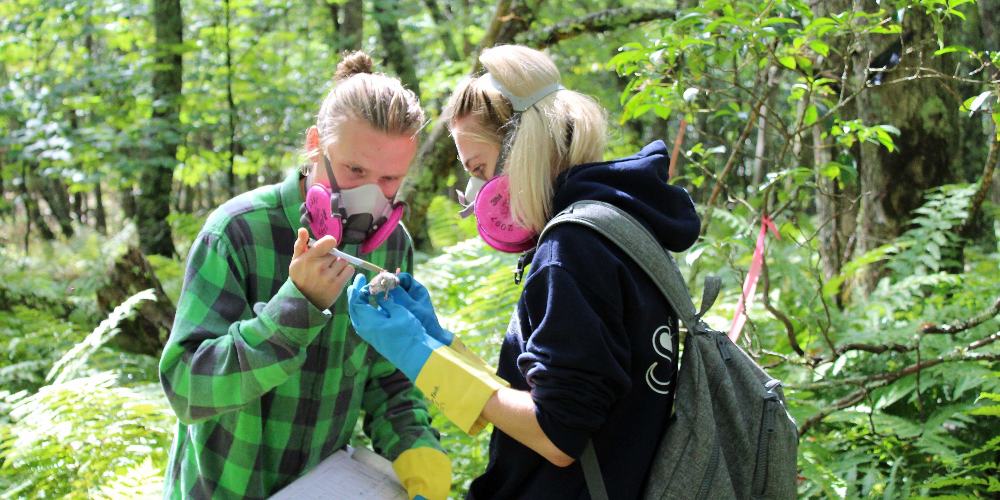
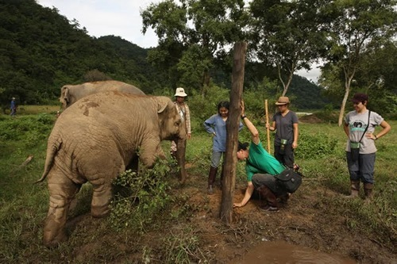
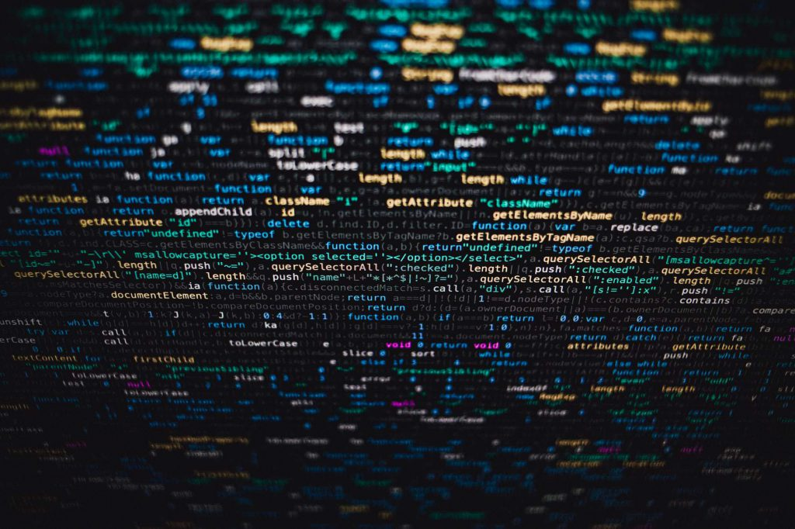
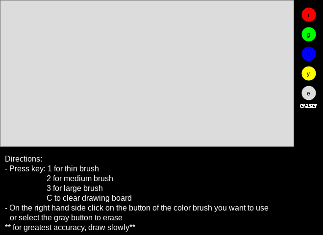
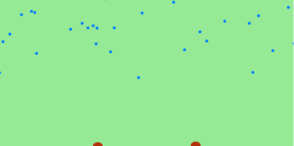

My name is Taylor Scumaci. I am going to West Virginia University next year and am majoring in Biology. I have always loved being around nature and working with animals. It is one of the only things I am truly passionate about so I hope to make a life out of it. I hope to be able to work in wildlife ecology researching or conserving our Earth's biodiversity. Other than the big parts of my life, my favorite color is green and I enjoy baking.I have two dogs named Max & Molly and a wild bunny that I have been feeding since it was a baby and I found its nest in my neighbors backyard when the mother abandoned it. I lifeguard at Marilla Pool in the summer and also work with my uncle on building/perfecting apps for the American Foundation For The Blind.
 I never planned on taking a Computer Science and Math credit at MHS. I had taken AP Calculus my junior year of high school and wanted my senior year work load to be easier since I had worked hard my 3 previous years. However, I had no idea what fun math credit to take. Mrs.Gibson recommended this class to me so I decided to get it a shot. I am very glad that I chose to take this class because it is nothing like anything I have ever done before and I really enjoying learning how to do new things and seeing them come together after working on it for a while. This class gives me just that. Throughout the year we have done many projects in the p5.js Web Editor and I am going to link a few of my favorites.
This was one of the first major projects we did in class so it was fun to navigate the web editor. It also was very customizable which made it interesting.
I really enjoyed this project because of how we got to see how apps are created and the precision that goes into perfecting the values.
This was the most difficult project we have done all year, but it was also the most intriuging to sort out all of the individual parts. We incorporated our own sketch files into the main coding process.